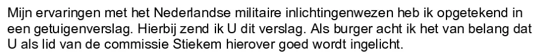

Prueba · Carta
Giltay a tres miembros de la CIVD, 20 de noviembre de 2010
El pasaje
«He dejado constancia de mis experiencias con la inteligencia militar neerlandesa en un testimonio. Adjunto le remito dicho testimonio. Como ciudadano, considero importante que usted, en su calidad de miembro de la comisión Stiekem, sea debidamente informado al respecto». Página 2, segundo párrafo de la carta a S. Blok. Traducido del neerlandés; el texto original figura a continuación. La «commissie Stiekem» (literalmente, la comisión a escondidas) es el nombre corriente de la Comisión de los Servicios de Inteligencia y Seguridad.
Texto original
“Mijn ervaringen met het Nederlandse militaire inlichtingenwezen heb ik opgetekend in een getuigenverslag. Hierbij zend ik U dit verslag. Als burger acht ik het van belang dat U als lid van de commissie Stiekem hierover goed wordt ingelicht.” El mismo párrafo figura, con una frase más, en las cartas a Cohen (página 1) y a Wilders (página 3).

Por qué importa este documento
El 20 de noviembre de 2010, Giltay dirigió esta carta confidencial a los presidentes de grupo parlamentario Job Cohen, Stef Blok y Geert Wilders, que entonces formaban parte también de la Comisión de los Servicios de Inteligencia y Seguridad, conocida en La Haya como la «comisión Stiekem». Adjuntaba un extenso testimonio sobre el caso, una versión temprana del manuscrito de El general del encubrimiento. Giltay escribió que, como ciudadano, consideraba importante que la comisión estuviera bien informada. Nunca llegó a saber qué se hizo con la carta una vez recibida.
Procedencia
- Documento
- Carta confidencial, tres páginas: prácticamente la misma carta de una página, dirigida por separado a cada uno de los tres destinatarios; las cartas a Cohen y a Wilders contienen una frase más cada una
- Remitente
- Edwin Giltay, La Haya
- Destinatarios
- M.J. Cohen, S. Blok y G. Wilders, miembros de la Comisión de los Servicios de Inteligencia y Seguridad (CIVD), Binnenhof 4, La Haya
- Fecha
- 20 de noviembre de 2010
- Asunto
- «Getuigenverslag van de uitzending van twee defensievrouwen in Delft ten behoeve van de Commissie voor de Inlichtingen- en Veiligheidsdiensten» (testimonio sobre la colocación, a través de una empresa de trabajo temporal, de dos mujeres de Defensa en Delft, destinado a la Comisión de los Servicios de Inteligencia y Seguridad)
- Marca
- «VERTROUWELIJK» (confidencial), en la parte superior de cada página
- Anexo
- El testimonio anunciado en la carta. No forma parte de este PDF
- Referencias
- Fotografías que las Fuerzas Armadas retuvieron y que podían servir como prueba de crímenes de guerra en Srebrenica, el tristemente célebre «rollo de película de Srebrenica»
- Tachado
- La tabla de la posdata que vincula los seudónimos del testimonio con los nombres reales está tachada en las tres páginas
- Idioma
- Neerlandés
- Conservado por
- Archivo del autor
Citado en: el ensayo «La prohibición cayó, el libro quedó en pie» en el capítulo (7) «Ninguna respuesta sobre el fondo».
Ficha de prueba: https://
Documento: https://
Modificado por última vez el 13 de septiembre de 2026, consultado el 26 de noviembre de 2026.

Esta página es una ficha de prueba del libro El general del encubrimiento de Edwin Giltay y del sitio web que lo acompaña.